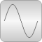

QuasiStationaryLibrary for quasi-stationary electrical singlephase and multiphase AC simulation |

|
Package Contents
|
User's guide |
|
|
Single phase AC components |
|
|
Quasistationary machine models |
|
|
Multiphase AC components |
|
|
Definition of types for quasistationary AC models |
Information
This information is part of the Modelica Standard Library maintained by the Modelica Association.
- Main Authors:
-
Anton Haumer
Technical Consulting & Electrical Engineering
D-93049 Regensburg, Germany
email: a.haumer@haumer.atDr. Christian Kral
Electric Machines, Drives and Systems
A-1060 Vienna, Austria
email: dr.christian.kral@gmail.com or mail@christiankral.net
Copyright © 1998-2019, Modelica Association and contributors